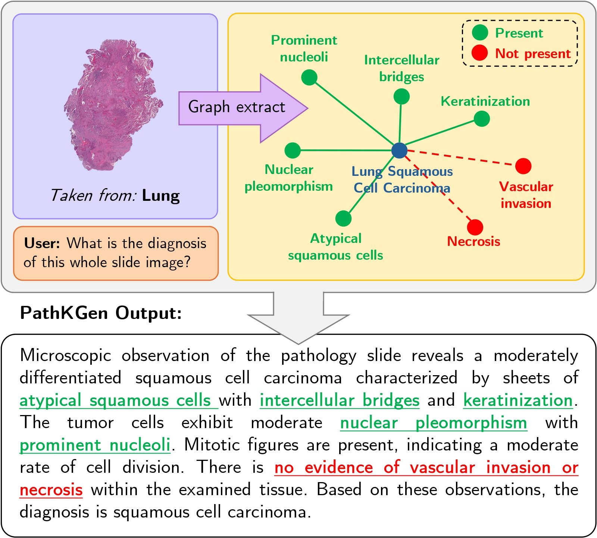
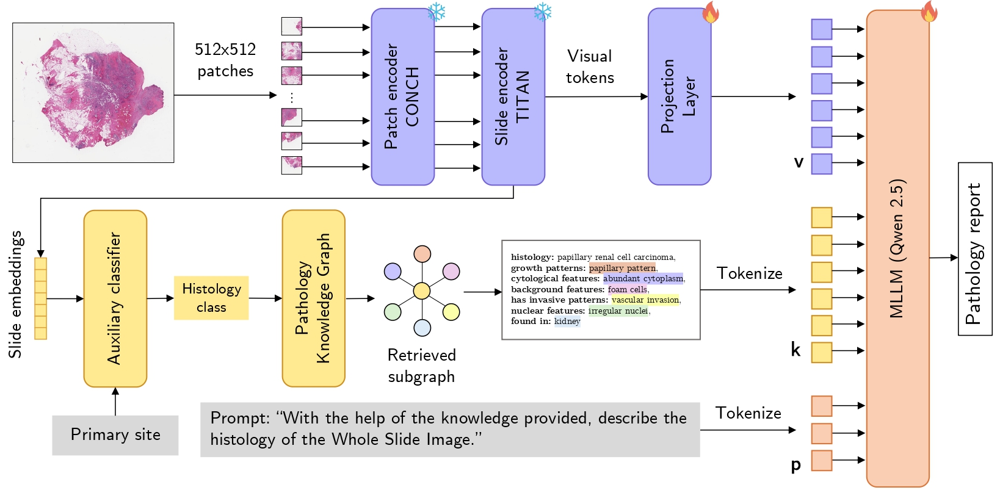
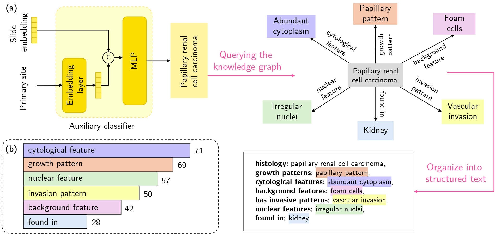
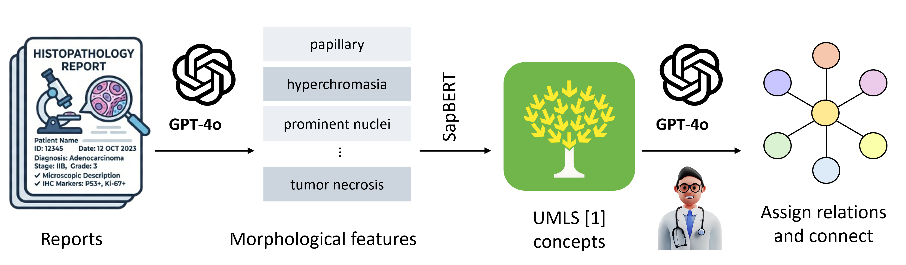
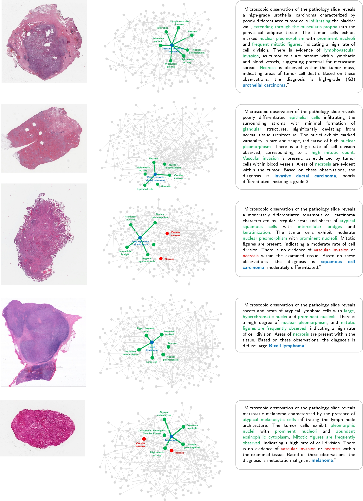
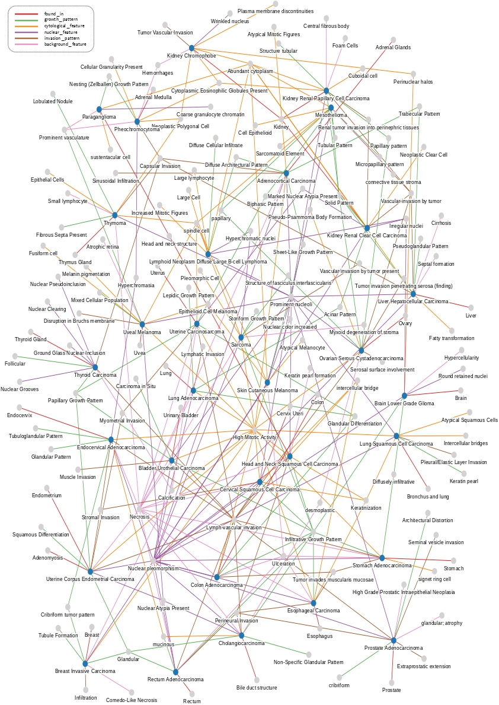

Whole Slide Image (WSI) analysis serves as the fundamental method for the clinical diagnosis of cancer in digital histopathology. Recent advances in Multimodal Large Language Models (MLLMs) have enabled state-of-the-art (SOTA) automated histopathology report generation. However, MLLMs reason purely through distributions encoded in their neural parameters, limiting the amount of knowledge and reasoning logic they can contain given the model scale. Their black-box reasoning poses another challenge to the human interpretation of intermediate reasoning.
We address these issues by utilizing knowledge graphs to inject external structured knowledge for MLLMs to reason over, while making this reasoning component visible. We introduce PathKGen, a knowledge graph–assisted MLLM for histopathology report generation with two branches: (1) a visual path that learns visual token inputs using pathology foundation models, and (2) a knowledge path that learns knowledge token inputs by extracting key morphological features of WSIs through querying a pathology-specific knowledge graph.
A comprehensive evaluation on the WSI-Bench dataset shows that PathKGen surpasses previous SOTA methods while revealing diagnostic reasoning as visually intuitive graphs. Due to its modular design, the knowledge path is complementary to vision-aligned MLLMs and can be extended to other applications by curating domain-specific knowledge graphs.
Given a WSI, PathKGen runs two parallel paths whose tokens are fed to a Qwen2.5-7B-Instruct MLLM. The model input is a unified prompt P = [v; k; p] of visual tokens, knowledge tokens and the instruction prompt.


GPT-4o extracts morphological features from WSI-Bench reports; SapBERT links them to UMLS concepts; relations are categorized by semantic type; and pathologists verify the final graph.

PathKGen outperforms existing WSI MLLMs on most metrics, including a 9.09% relative gain in the LLM-as-a-Judge WSI-Precision.
| Model | B-1 | B-2 | B-3 | B-4 | R-L | M | W-P |
|---|---|---|---|---|---|---|---|
| GPT-4o | 0.202 | 0.069 | 0.030 | 0.016 | 0.132 | 0.167 | 0.067 |
| Quilt-LLaVA | 0.334 | 0.170 | 0.093 | 0.057 | 0.246 | 0.291 | 0.324 |
| MI-Gen | 0.403 | 0.306 | 0.248 | 0.209 | 0.446 | 0.407 | 0.310 |
| HistGen | 0.406 | 0.307 | 0.248 | 0.208 | 0.448 | 0.416 | 0.300 |
| WSI-Agents | 0.444 | 0.308 | 0.231 | 0.183 | 0.448 | 0.472 | 0.440 |
| WSI-LLaVA | 0.480 | 0.358 | 0.287 | 0.240 | 0.490 | 0.465 | 0.380 |
| PathKGen (Ours) | 0.512 | 0.389 | 0.316 | 0.261 | 0.519 | 0.485 | 0.480 |
B: BLEU, R-L: ROUGE-L, M: METEOR, W-P: WSI-Precision. BERTScore F1: 0.9081 (RoBERTa-large) vs. 0.9068 for WSI-LLaVA.
| Knowledge-path input | B-1 | B-2 | B-3 | B-4 | R-L | M | W-P |
|---|---|---|---|---|---|---|---|
| None | 0.4922 | 0.3745 | 0.3063 | 0.2548 | 0.5185 | 0.4730 | 0.4661 |
| Predicted histology (H) | 0.5020 | 0.3805 | 0.3088 | 0.2558 | 0.5174 | 0.4789 | 0.4570 |
| Primary site (PS) only | 0.4959 | 0.3773 | 0.3072 | 0.2549 | 0.5142 | 0.4750 | 0.4480 |
| PathKGen (H + PS + MF) | 0.5122 | 0.3885 | 0.3154 | 0.2611 | 0.5194 | 0.4849 | 0.4802 |
Adding the knowledge path lets smaller models approach larger ones. Scaling the model still gives the biggest gain, but external knowledge helps at every scale.
| Method | B-1 | B-2 | B-3 | B-4 | R-L | M | W-P |
|---|---|---|---|---|---|---|---|
| V path only (7B) | 0.4922 | 0.3745 | 0.3063 | 0.2548 | 0.5185 | 0.4730 | 0.4661 |
| V + K path (1.5B) | 0.4792 | 0.3607 | 0.2930 | 0.2426 | 0.5040 | 0.4562 | 0.4290 |
| V + K path (3B) | 0.4950 | 0.3723 | 0.3011 | 0.2484 | 0.5082 | 0.4719 | 0.4428 |
| V + K path (7B), PathKGen | 0.5122 | 0.3885 | 0.3154 | 0.2611 | 0.5194 | 0.4849 | 0.4802 |
Counterfactual interventions at inference time show it does: an oracle histology anchor slightly helps, while a random wrong anchor sharply degrades WSI-Precision.
| Intervention | WSI-Precision |
|---|---|
| Predicted histology anchor (default) | 0.4802 |
| Oracle histology anchor | 0.4830 |
| Random-wrong histology anchor | 0.2540 |
The retrieved subgraph is shown next to each generated report. Features supported by the slide are green, features with no evidence are red, and the predicted histology is blue. The model also learns connections absent from the graph (isolated green nodes) and uses negation, where absent features serve as diagnostic evidence.

The graph has 177 nodes and 317 edges across 31 histology classes. It is sparse yet cohesive (density 0.01, average out-degree 1.79). Relations fall into six categories: cytological feature (71), growth pattern (69), nuclear feature (57), invasion pattern (50), background feature (42) and found in (28).

@article{rajapaksha2026pathkgen,
title={PathKGen: Pathology Knowledge Assisted MLLM for Explainable Histopathology},
author={Rajapaksha, Nadun and Herath, Sandun and Wijesinghe, Devnith and Withanawasam, Isiri Amani and Watawana, Hasindri and Rodrigo, Ranga},
year={2026},
url={https://github.com/nadunnr/PathKGen}
}